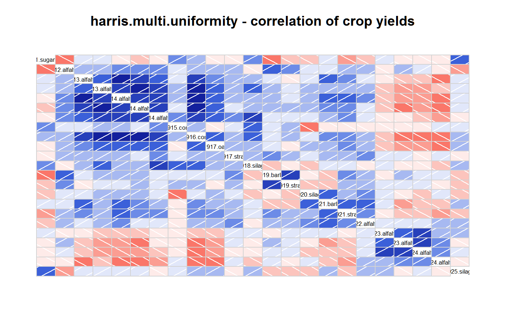
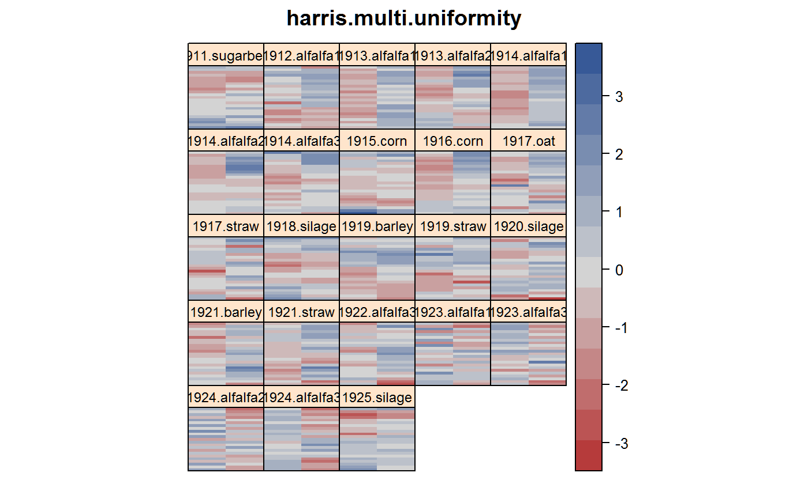
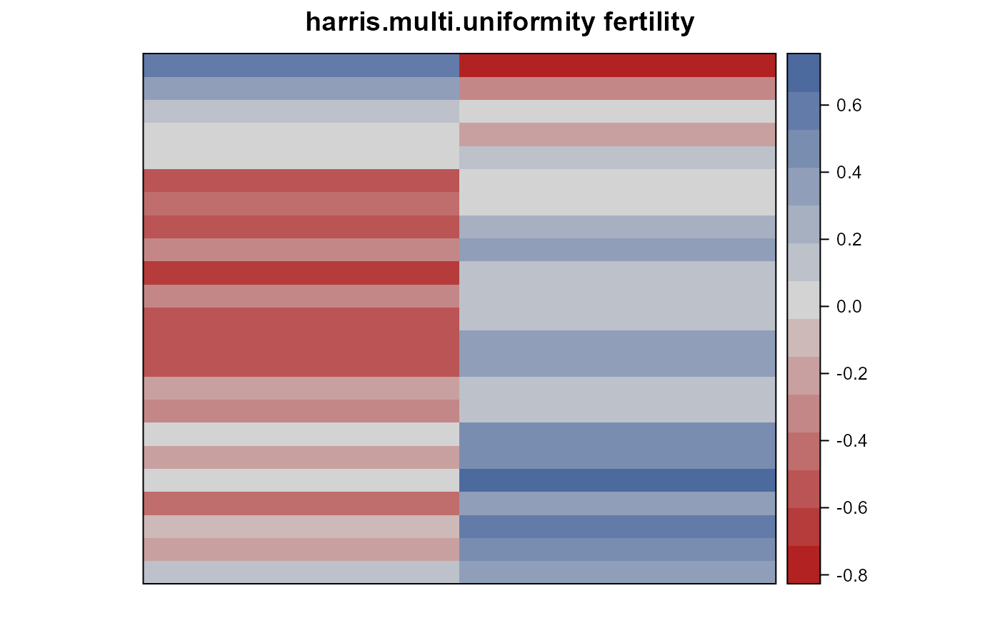

harris.multi.uniformity.RdUniformity trials with multiple crops, at Huntley Field Station, Montana, 1911-1925.
A data frame with 1058 observations on the following 5 variables.
seriesseries (field coordinate)
plotplot number (field coordinate)
yearyear, 1911-1925
cropcrop factor
yieldyield, numeric
Field width: 2 plots * 317 ft + 5 feet alley = 639 feet
Field length: 23 plots * 23.3 feet = 536 feet
All yields are given in pound per plot, except sugar beets, which are given in tons per acre. Harris (1928) shows a map of the location.
Harris 1920: In the spring of 1911 this field was laid out into 46 plots, each measuring 23.5 by 317 feet and containing 0.17 acre, arranged in two parallel series of 23 plots each. The two series of plots were separated merely by a temporary irrigation ditch. In 1911 it was planted to sugar beets, and in the spring of 1912 it was seeded to alfalfa, and one cutting was harvested that year. This stand remained on the ground during 1913 and 1914, when the entire field was fall-plowed. In 1913 three cuttings were made, but the third cutting was lost in a heavy wind which scattered and mixed the crop before weighings from the various plots could be made. The first cutting, designated as alfalfa I, was made on plots one-half the original size. The second cutting was harvested from plots one-quarter the original size. The first and second cuttings in 1914 were weighed for plots one-quarter the original size--that is, 0.0425-acre plots--while the third cutting was recorded for plots one-third the original size. These furnish the data for alfalfa I, II, and III for 1914. Total yields for the first and second cuttings in 1913 and 1914 and for the first, second, and third cuttings in 1914 are also considered. In 1915 and 1916 ear corn was grown. In 1917 the fields were planted to oats, and records were made of grain, straw, and total yield. In 1918 silage corn was grown. In 1919 the land produced a crop of barley.
Harris 1928: The southeast corner of Series II, the east series, is about 80 feet from the main canal, and the southwest corner of Series III is about 50 feet from Ouster Coulee. The main project canal carries normally during the irrigation season about 400 second-feet of water. The water surface in the canal is about 4 feet above the high corner of the field. It is evident from surface conditions, as well as from borings made between the canal and the field, that there is extensive seepage from the canal into the subsoil of the field. The volume of this seepage has been larger in recent years than it was in the earlier years of the cropping experiments, probably because the canal bank has been worn away by internal erosion, exposing a stratum of sandy subsoil that underlies the canal and part of the field.
Whereas in the earlier crops Series II was better for alfalfa, Series III was better for alfalfa in the later period. The writers feel inclined to suggest that in the earlier experiments the height of the water table had no harmful effect upon a deep-rooted crop such as alfalfa. It is quite possible that during drier periods the higher water table actually favored alfalfa growth on Series II. The higher water tables of recent years have probably had a deleterious influence, which has been especially marked on Series II, where the water apparently comes nearer to the surface than in Series III.
Harris, J Arthur and Scofield, CS. (1920). Permanence of differences in the plats of an experimental field. Jour. Agr. Res, 20, 335-356. http://naldc.nal.usda.gov/catalog/IND43966236
Harris, J Arthur and Scofield, CS. (1928). Further studies on the permanence of differences in the plots of an experimental field. Jour. Agr. Res, 36, 15--40. http://naldc.nal.usda.gov/catalog/IND43967538
library(agridat) data(harris.multi.uniformity) dat <- harris.multi.uniformity # Combine year/crop into 'harvest' dat <- transform(dat, harv = factor(paste0(year,".",crop))) # Convert 1911 from tons to pounds dat$yield[dat$year==1911] <- 340 * dat$yield[dat$year==1911] # Average yields. Harris 1928, table 2. aggregate(yield~harv, dat, mean)#> harv yield #> 1 1911.sugarbeet 4181.5565 #> 2 1912.alfalfa1 356.5435 #> 3 1913.alfalfa1 541.4130 #> 4 1913.alfalfa2 483.2609 #> 5 1914.alfalfa1 489.1304 #> 6 1914.alfalfa2 499.3478 #> 7 1914.alfalfa3 471.9565 #> 8 1915.corn 522.5870 #> 9 1916.corn 396.1522 #> 10 1917.oat 555.8043 #> 11 1917.straw 521.5435 #> 12 1918.silage 3175.4348 #> 13 1919.barley 358.1957 #> 14 1919.straw 230.5000 #> 15 1920.silage 2394.1304 #> 16 1921.barley 525.6087 #> 17 1921.straw 324.8261 #> 18 1922.alfalfa3 379.4565 #> 19 1923.alfalfa1 604.1304 #> 20 1923.alfalfa3 300.2174 #> 21 1924.alfalfa2 642.3913 #> 22 1924.alfalfa3 357.6087 #> 23 1925.silage 4267.9348#> #> #>#> #>#> #> #>#> #> #>mat <- acast(dat, series+plot~harv, value.var='yield') corrgram(mat, main="harris.multi.uniformity - correlation of crop yields")# Compare to Harris 1928, table 4. More positive than negative correlations. # densityplot(as.vector(cor(mat)), xlab="correlations", # main="harris.multi.uniformity") # Standardize yields for each year mats <- scale(mat) # Melt and re-name columns so we can make field maps. Obvious spatial # patterns that persist over years d2 <- melt(mats) names(d2) <- c('ord','harv','yield') d2$series <- as.numeric(substring(d2$ord,1,1)) d2$plot <- as.numeric(substring(d2$ord,3)) # Series 2 is on the east side, so switch 2 and 3 for correct plotting d2$xord <- 5 - dat$series # Note that for alfalfa, higher-yielding plots in 1912-1914 were # lower-yielding in 1922-1923. libs(desplot) desplot(yield ~ xord*plot|harv, d2, aspect=536/639, flip=TRUE, # true aspect main="harris.multi.uniformity")# Crude fertility map by averaging across years shows probable # sub-surface water effects agg <- aggregate(yield ~ xord + plot, data=d2, mean) desplot(yield ~ xord + plot, agg, aspect=536/639, # true aspect main="harris.multi.uniformity fertility")